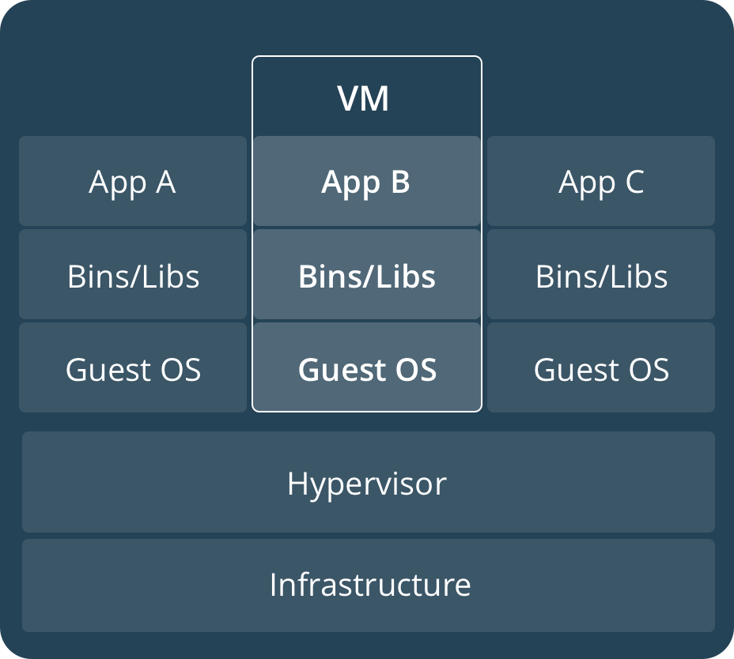

1. docker概念¶
1.1. docker优点¶
- 灵活
- 即使是最复杂的应用也可以集装箱化。
- 轻量级
- 容器利用并共享主机内核。
- 可互换
- 您可以即时部署更新和升级。
- 便携式
- 您可以在本地构建，部署到云，并在任何地方运行。
- 可扩展
- 您可以增加并自动分发容器副本。
- 可堆叠
- 您可以垂直和即时堆叠服务。
1.2. 容器和镜像¶
一个容器是一个镜像的运行，一个镜像是一个可执行的包，这里面包含应用运行的代码、运行时环境、依赖库和配置文件等。 一个容器是一个镜像的运行实例，一个镜像可以运行处多个实例的。
1.3. 容器和虚拟机¶
| 容器 | 虚拟机 |
|---|---|

|
 |
1.4. docker版本¶
# 查看docker版本
docker --version
Docker version 17.12.0-ce, build c97c6d6
# 查看docker详细信息
docker info
Containers: 0
Running: 0
Paused: 0
Stopped: 0
Images: 0
Server Version: 17.12.0-ce
Storage Driver: overlay2
...
1.5. 测试docker的安装¶
# 运行一个样例docker
docker run hello-world
Unable to find image 'hello-world:latest' locally
latest: Pulling from library/hello-world
ca4f61b1923c: Pull complete
Digest: sha256:ca0eeb6fb05351dfc8759c20733c91def84cb8007aa89a5bf606bc8b315b9fc7
Status: Downloaded newer image for hello-world:latest
Hello from Docker!
This message shows that your installation appears to be working correctly.
...
# 列出当前镜像列表
docker image ls
# 列出所有
docker container ls --all
CONTAINER ID IMAGE COMMAND CREATED STATUS
54f4984ed6a8 hello-world "/hello" 20 seconds ago Exited (0) 19 seconds ago